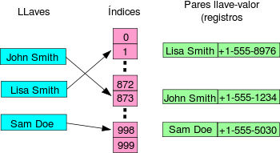

es una estructura de datos que asocia llaves o claves con valores. La operación principal que soporta de manera eficiente es la búsqueda: permite el acceso a los elementos (teléfono y dirección, por ejemplo) almacenados a partir de una clave generada (usando el nombre o número de cuenta, por ejemplo). Funciona transformando la clave con una función hash en un hash, un número que identifica la posición (casilla ocubeta) donde la tabla hash localiza el valor deseado.
Las tablas hash se suelen implementar sobre vectores de una dimensión, aunque se pueden hacer implementaciones multi-dimensionales basadas en varias claves. Como en el caso de los arrays, las tablas hash proveen tiempo constante de búsqueda promedio, sin importar el número de elementos en la tabla.
Las tablas hash almacenan la información en posiciones pseudo-aleatorias, así que el acceso ordenado a su contenido es bastante lento. Otras estructuras como árboles binarios auto-balanceables tienen un tiempo promedio de búsqueda mayor (tiempo de búsqueda O(log n)), pero la información está ordenada en todo momento.
Para almacenar un elemento en la tabla hash se ha de convertir su clave a un número. Esto se consigue aplicando la función resumen (hash) a la clave del elemento. El resultado de la función resumen ha de mapearse al espacio de direcciones del vector que se emplea como soporte, lo cual se consigue con la función módulo. Tras este paso se obtiene un índice válido para la tabla.
Para recuperar los datos, es necesario únicamente conocer la clave del elemento, a la cual se le aplica la función resumen. El valor obtenido se mapea al espacio de direcciones de la tabla. Si el elemento existente en la posición indicada en el paso anterior tiene la misma clave que la empleada en la búsqueda, entonces es el deseado. Si la clave es distinta, se ha de buscar el elemento según la técnica empleada para resolver el problema de las colisiones al almacenar el elemento.